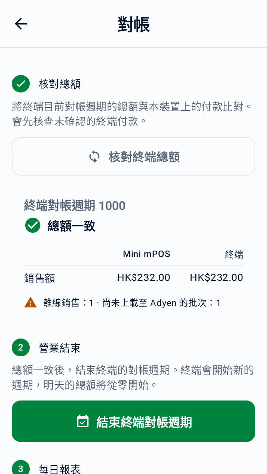
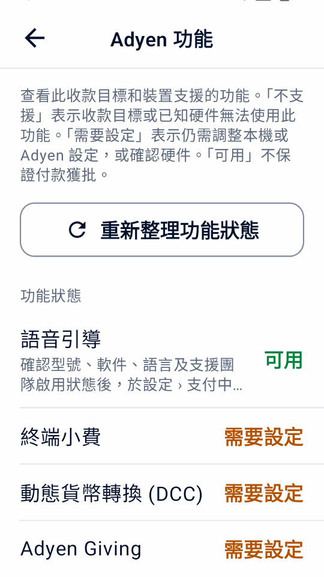
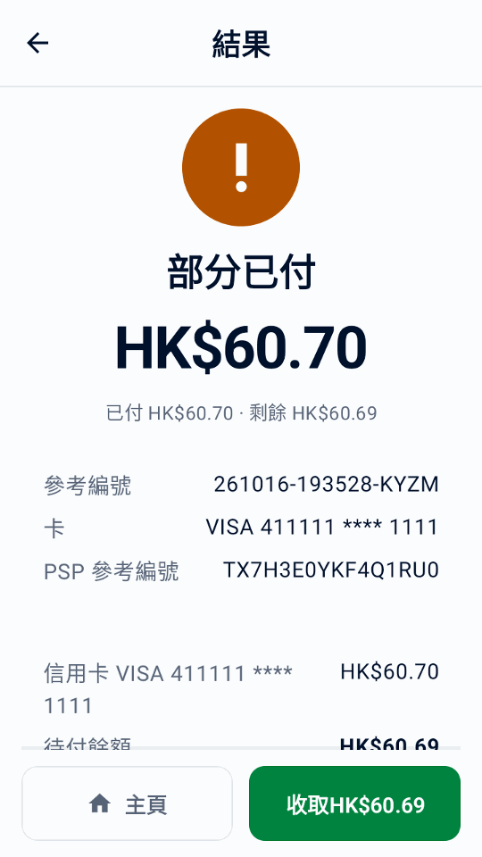
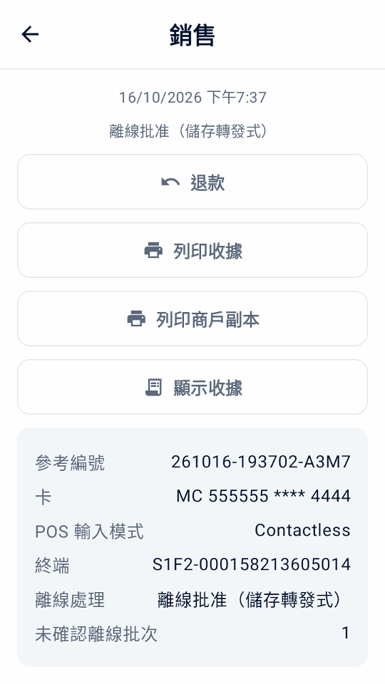
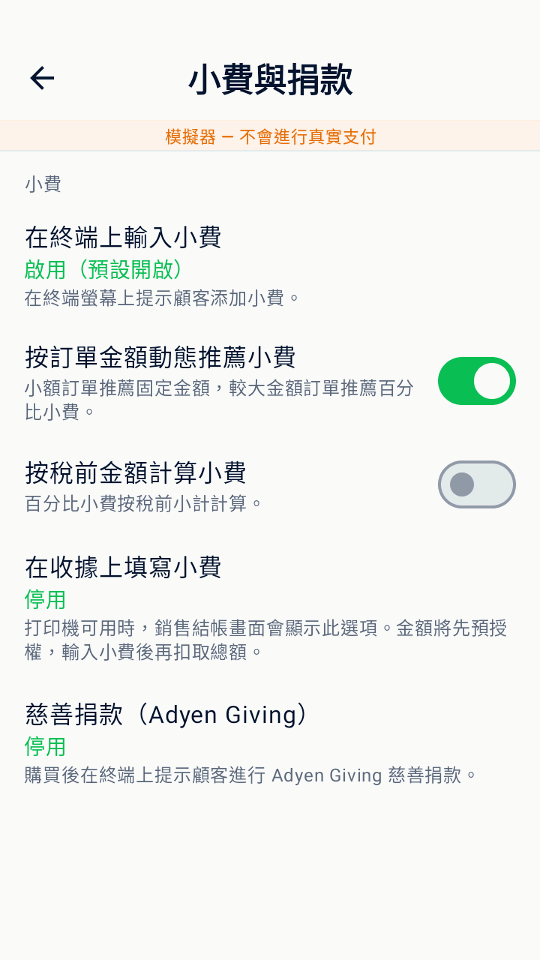

指南
使用 Mini mPOS
日常工作的分步操作：收款、退款、發送收據和每日對帳。可選流程放在最後。
日常操作
準備商品、稅費和員工權限
真實收款前，請完成連接 Adyen 的設定。需要支付終端或 Adyen Payments 應用程式。然後一次性準備商品、稅費和員工權限。
設定貨幣和稅費
- 在設定 › 支付中選擇商戶帳戶接受實體店付款的貨幣。
- 在設定 › 稅中檢查稅率、價格含稅還是結帳時加稅，以及新商品的預設稅率。
每個商品都有稅率，不徵稅的商品使用 0% 稅率。關閉收取稅費會停止徵稅，但保留稅率。
重要
更改貨幣會保留價格中的數值，不會按匯率換算。更改後請檢查商品價格。
新增商品
- 打開設定 › 商品，點按 +。
- 輸入名稱、價格和稅率。可選新增分類和條碼（輸入或掃描）。
- 訂金商品請開啟預授權商品，使其只出現在預授權中。
設定員工 PIN
- 在設定 › 安全中點按設定 PIN。它保護設定和商品管理。選擇應用程式多久後重新鎖定。
- 可選：點按設定經理 PIN。之後退款、取消、扣款、金額調整和錄入小費都需要輸入它。
如需更換或移除管理員 PIN，請使用更改管理員 PIN或移除管理員 PIN；移除它也會移除經理 PIN。多次輸錯會暫時鎖定 PIN 輸入。忘記 PIN 時請參閱 PIN 問題。
銀行卡收款
- 在首頁點按新建銷售。點按商品、點按掃描條碼，或新增自訂商品。
- 點按收款。核對商品、稅費和總計，並填寫參考編號或電郵欄位。
- 點按支付。終端（或 Tap to Pay 的 Adyen Payments 應用程式）會提示顧客付款。
- 等待結果。結果顯示前請勿開始另一筆付款。
- 通過列印收據、發送電子收據或分享收據向顧客提供收據（已自動發送時除外）。
說明
銀行卡由終端讀取，Mini mPOS 不會獲得完整卡號資訊。根據終端和商戶帳戶的不同，顧客可插卡、揮卡，或用手機、手錶感應付款。非接觸式（NFC）付款時，卡或手機須保持靠近非接觸標誌，直到終端確認。使用 Tap to Pay 時，請按 Adyen Payments 應用程式中的說明操作。
警告
結果未知不表示付款失敗。再次收款前，請查詢原付款。
顧客參考編號、儲存卡和小費均可選；參見參考編號和儲存卡。如需讓顧客在自己的手機上付款，請使用付款連結 。付款被拒絕時，請參閱付款被拒絕。
退款或撤銷付款
- 退款
- 適用於已扣款的付款，退還全部或部分金額。
- 撤銷（取消）
- 適用於尚未扣款的凍結付款：訂金點按取消預授權，待填寫小費 的銷售點按取消支付。這會釋放凍結金額。
退款步驟：
- 在首頁點按退款並掃描收據上的退款二維碼，或在交易紀錄中打開原銷售。
- 選擇全額、指定金額或按商品退款。按商品退款要求本設備保留原銷售。
- 確認退款，如有提示則輸入經理 PIN。
每筆退款都關聯原付款，不支援無原付款的退款。已支付的付款連結請在商戶後台退款。
拆分的銷售會退回原付款。Mini mPOS 會建議退回每張信用卡的金額和要退還的現金；點按某筆付款即可在可退範圍內調整金額。先逐筆退款到信用卡，最後退還現金。退還現金需要經理PIN。如果某筆信用卡退款未被受理，其餘付款不會退回；請開啟此筆銷售查看剩餘部分。
重要
已請求退款表示 Adyen 已收到請求，不表示顧客已收到款項。請在商戶後台確認最終結果。退款結果未知時， 重試前請先查詢。
列印、發送電子收據或分享收據
在付款結果或交易紀錄中點按列印收據或發送電子收據。平板和手機還可點按分享收據，通過 Android 分享選單發送圖片。列印需要配有打印機的終端。
自訂並測試收據
- 在設定 › 收據中填寫商戶資訊、抬頭和頁尾。也可點按從 Adyen 匯入商戶資訊，檢視 Adyen 提供的資料。選擇 補充缺漏資料保留現有文字，或選擇取代現有資料使用取得的商戶名稱、地址及電話。匯入的空白欄位保留原值，稅務編號、標題及頁尾不變。
- 選擇自動列印、何時列印商戶副本，以及是否顯示退款二維碼。
- 點按列印測試收據並檢查列印效果。螢幕預覽無法顯示打印機的確切排版。
其他選項：
- 顯示稅額
- 顯示總額中包含或另行加收的稅額，不改變實際收取的稅額。
- 顯示稅額明細
- 按稅率列出稅額。價格含稅時，顯示所含稅額需要開啟此項。
- 按稅率顯示應稅金額
- 按稅率彙總商品金額，包括 0%。
- 顯示參考編號
- 預設開啟。列印商戶參考編號及已輸入的顧客參考編號，便於將收據與付款對應。
- 標記的稅率（%）
- 用商品標記及其說明標出該稅率的商品。留空則不標記。
- 每行字元寬度
- 預設為 32，適用於較窄的收據紙捲。請通過測試列印選擇適合打印機的寬度。
設定語言
應用程式支援英語、簡體中文、繁體中文、日語、巴西葡萄牙語、西班牙語和法語。在設定 › 語言 中選擇此裝置的應用程式語言。應用程式文字和應用程式產生的收據標籤會立即更改；已儲存的商戶文字、商品名稱、貨幣和稅設定保持不變。跟隨裝置在 Android 12 及更早版本使用裝置語言，在 Android 13 及更高版本使用 Android 的個別應用程式語言選擇。Adyen 的銀行卡收據行跟隨終端自身的收據語言。
設定電子收據
- 打開設定 › 電郵收據。選擇服務商，或填寫 SMTP 伺服器、連接埠、寄件人和登入資訊。使用 STARTTLS 或 SSL/TLS。
- 發送測試郵件。
- 在同一螢幕上選擇何時詢問顧客電郵，以及是否自動發送收據。
請按服務商說明開通 SMTP 並取得正確的密碼：
收據無法列印或發送時，請參閱打印機和郵件問題。
查詢付款並完成每日對帳
交易紀錄按日列出付款和退款，並顯示每日總計。
每頁最多顯示七個日期內的100筆符合條件的記錄。即使某天的記錄分佈於多頁，每日摘要仍包括當日所有符合篩選條件的交易。使用上一步和下一步 翻頁。搜尋涵蓋所有保留的交易。
- 按銷售、待填寫小費、預授權、退款或需處理篩選，並用付款方式篩選卡品牌或錢包。
- 可按參考編號、授權碼、顧客參考編號或電郵、卡號後四位、品牌、錢包或確切金額搜尋。每個詞都需相符：
visa 34可查找金額為 34 的 Visa 付款。
螢幕上的總計受搜尋和篩選影響。凍結的付款（如訂金和收據小費）在扣款被受理當日計入銷售。
每日對帳
- 打開交易紀錄，篩選需處理並逐一處理；參見結果未知。
- 檢查待填寫小費和預授權篩選。錄入小費，並在凍結到期前為訂金扣款或取消。
- 點按日期旁的列印圖示，列印本地每日摘要。
- 與商戶後台中的 Adyen 報告對帳；參見 Adyen 結算對帳指南 。
摘要忽略篩選，涵蓋整日的銷售、已含小費、已受理退款、淨額、新增凍結和未解決操作，按貨幣分列。TEST 和模擬器活動會標明。已支付的付款連結和日期未知的扣款會作為無日期活動單獨列出。
重要
本地每日摘要只包含本設備儲存的付款，不是 Adyen 的最終結算，也不包含其他設備。以商戶後台為準。
警告
在 LIVE、TEST 和模擬器之間切換會永久刪除本設備上的所有交易紀錄和報告資料。存在未完成付款時，應用程式會再次警告：Adyen 上的任何操作都不會被取消，但本地恢復和安全重試資料將遺失。商品和設定保留。
核對終端總額並結束週期
- 在主頁點按對帳，然後點按核對終端總額。Mini mPOS 會先核查待處理或結果未知的終端付款，然後並排顯示 Mini mPOS 與終端的銷售額及退款。
- 如果顯示總額不一致 ，請在交易紀錄中處理需要關注的付款後再次核對。終端對帳週期不一定等於一個曆日；其他設備使用同一終端或本地紀錄缺失都可能導致差異。付款連結、代碼扣款和示例紀錄不屬於終端付款。
- 營業結束時，點按結束終端對帳週期並確認，在要求時完成經理批准。終端會結束目前的週期並開始新的週期；此操作無法還原。
- 如有需要，點按列印今日報表列印本地每日摘要。
此功能適用於實體終端和模擬器，不適用於 Tap to Pay。總額一致或週期結束都不代表結算、退款完成或離線付款已上傳。最終財務結果仍請以商戶後台為準。


選用流程
檢查並設定 Adyen 功能
連接收款目標後，開啟設定 › Adyen 功能。頁面將功能標為可用、需要設定或此收款目標不支援。這些只是設定狀態，不代表商戶帳戶、銀行卡或付款方式一定能完成交易。完成收款設定前，此頁面會顯示完成收款設定。
- 點按重新整理功能狀態，讀取所選終端的設定。檢查真實終端需要快速入門中列出的 Management API 角色。
- 對於支援的終端，可設定付款貨幣的終端小費、DCC、MOTO 或離線限額。這些控制項會更新 Adyen 上的終端設定，而不只是 Mini mPOS，且只在點按儲存至 Adyen 時更新。「主貨幣單位」使用貨幣的主單位；最小單位金額使用 Adyen 的貨幣精度。
- 在設定中的支付、小費與捐款或顧客端終端螢幕中啟用所需結帳選項，並在 TEST 中測試。功能列表還包括 Adyen Giving、部分授權、附加費、禮品卡、終端對帳和顧客端螢幕，但並非每項都有設定控制項。
Tap to Pay 不提供終端小費、顧客端螢幕、MOTO/MKE、離線支付或終端對帳等實體終端功能。部分授權是獨立的付款選項。帳戶開通和付款方式要求請參閱 Adyen 實體店支付文件。模擬器中可用不代表真實終端支援。


使用可選結帳流程
只在設定中啟用需要的結帳選項。除部分授權外，這些流程需要支援的實體終端，不適用於 Tap to Pay。請先檢查 Adyen 功能並測試實際設定。
使用語音引導付款
在結賬時為本次顧客開啟語音引導。 AMS1、S1F2、S1F2L、S1E2L及S1U2需軟件1.117或更新版本，M450、P630及SFO1需1.124或更新版本。 Adyen支援團隊必須先為終端啟用此功能。 Tap to Pay、未列出的型號及未知型號不支援此功能。 請參閱Adyen無障礙付款要求。
關閉終端小費、收據小費、Giving及特殊卡輸入方式。 檢查軟件及啟用狀態後，再選擇確認無障礙設定。 請使用毋須簽名的卡，終端語言不能為愛沙尼亞語、拉脫維亞語、冰島語或立陶宛語。 確認後，此次付款將要求全額付款而不接受部分授權，並略過已設定的顧客螢幕提示。 如需選擇付款連結、掃碼錢包或代碼，請關閉語音引導。
終端會朗讀付款指示。 請為付款及輸入PIN碼預留足夠時間；付款或取消後語音引導會結束。 Mini mPOS最多等待十分鐘後再查詢原交易。 如果Adyen設定了更長的逾時，或未收到回應，請在再次付款前查詢結果不明的交易。 本次嘗試開始後，此選項會重設。 模擬示範不會播放語音，亦不能驗證真實終端支援。
Adyen 按設定計算附加費。Mini mPOS 將已報告的附加費與購買金額和小費分開記錄；扣款總額已包含附加費。 未報告的費用（包括舊歷史記錄中的費用）會保留為未知。收據保留 Adyen 的原始銀行卡明細。 日報分別列出已知的購買金額和附加費，並統計附加費未報告的銷售筆數。
若部分授權未報告附加費，Mini mPOS 無法確定剩餘購買金額。 請在 Customer Area 核實，或先向原付款卡退款再重新收款。
退款前請核對原付款卡及其剩餘可退金額。多卡付款須按卡分別退款。待處理或結果不明的退款會預留相應額度，直至結果明確。 按商品退款只退購買金額；按金額退款則依次退購買金額、小費和附加費。全額退款包括剩餘的已報告附加費。 請在 Customer Area 確認退款完成。
付款前請向顧客披露附加費，尤其是沒有附加費確認畫面的 Tap to Pay。附加費不能與 DCC 同用，也不能透過授權調整或超額擷取增加。 已報告附加費時，Mini mPOS 會阻止授權調整及超過原預授權金額的擷取。請參閱 Adyen 附加費要求及 Adyen 附加費設定。
收取部分授權後的剩餘金額
開啟允許部分授權，即可接受銀行卡批准低於請求金額的付款。結果顯示部分已付時，核對已付和剩餘金額，然後在該結果頁面點按支付剩餘，用另一張卡收取差額。應用程式將各次付款保留在同一筆銷售中。全部金額獲批前，不要將銷售視為全額付清。
未收到答覆不等於部分批准。繼續收款前請解決未知結果。不要按原合計金額另開一筆銷售：已批准的部分已經付款。


拆分銷售或收取現金
在結帳頁點按拆分或以現金付款。選擇本次付款的金額、均分或商品，然後點按刷卡或現金。價格和稅額保持登記時不變，多出的最小貨幣單位分給前幾份。現金付款時，輸入顧客給的金額，找回顯示的零錢，然後確認。現金只記錄在本裝置上，不會傳送到終端。
銷售在付清前保持部分已付。在結果頁或交易紀錄中點按收取餘額即可繼續，重新啟動後也可以。拆分前請關閉小費、捐款、語音指引及 MOTO 或手動輸入。按商品付款時全額收取；其他刷卡金額仍可能由發卡機構部分授權。刷卡結果未知時，請先確認再繼續收款。收據會列出每筆付款，每日報告會另列現金；終端合計從不包含現金。
設定禮品卡後，點按禮品卡即可用禮品卡支付所選金額。餘額不足時會部分獲批， 餘下款項可繼續收取。禮品卡付款的退款會退回卡內；本地禮品卡除外，需在 Mini mPOS 以外退款。
使用顧客端終端螢幕
使用獨立的網絡或雲端終端時，開啟設定 › 顧客端終端螢幕。可選擇在付款前顯示商品明細、請顧客確認訂單，或在結帳未填寫電郵時收集電郵。收集電郵需要先設定 電郵收據；開啟自動發送電子收據後，收據會自動發送。批准後可顯示二維碼並邀請顧客進行 0–10 評分；終端回傳的評分顯示在交易詳情中。
這些提示使用所選應用程式語言，模擬器也可示範。Mini mPOS 直接在支付終端上執行時不提供此功能。顯示的二維碼包含商戶參考編號，不是託管收據的下載連結；仍請 列印、發送電子收據或分享收據。
邀請慈善捐款
與 Adyen 安排開通 Adyen Giving 後，在設定 › 小費與捐款中啟用慈善捐款（Adyen Giving） 。銷售結帳時選擇它，在付款後透過終端邀請捐款。預授權和收據小費凍結付款不提供此選項。
購買和捐款是兩筆獨立交易。終端報告的捐款金額顯示在交易詳情中；購買獲批本身不代表捐款已確認。
接受 MOTO 或手動鍵入卡號付款
- 向 Adyen 確認終端和帳戶允許所需輸入方式。必要時在 Adyen 功能中設定 MOTO，並按員工 PIN 說明設定權限。
- 在設定 › 支付中啟用 MOTO 或手動鍵入卡號選項。結帳時，遠距訂單選擇郵購／電話訂購（MOTO）；晶片或感應讀取失敗時選擇 手動鍵入卡號（MKE）。兩者只能選一個。
- 點按支付，閱讀欺詐和拒付責任警告，並在提示時完成經理批准。在終端上輸入銀行卡資料，切勿輸入 Mini mPOS。
手動鍵入卡號交易為商戶帶來更高的欺詐和拒付責任風險。開啟應用程式開關不會在 Adyen 開通服務，也不會消除風險。
識別離線付款和待確認批次
離線 EMV 和儲存轉發式（Store-and-Forward）支付需要透過本地連接存取支援的終端：Mini mPOS 在該終端上執行，或連接同一網絡中的終端。雲端路由和 Tap to Pay 不提供此功能。請先與 Adyen 安排離線處理並評估風險，再在 Adyen 功能中設定限額。Mini mPOS 本身不會排隊儲存付款，也不能在本地網絡中斷時恢復終端連接。
交易紀錄會標記終端報告的離線銷售。開啟銷售可查看離線處理、使用的是離線 EMV 還是儲存轉發式，以及終端報告的未確認離線批次。離線批准可能暫時沒有 PSP 參考編號。它不是未知結果，但也不代表 Adyen 已收到或結算該付款。
恢復終端與 Adyen 的連接後，在商戶後台核對上傳的付款和最終結果。進行終端對帳 時檢查離線和未確認批次警告；總額一致不代表離線付款已結算。若未收到明確付款答覆，請遵循未知結果恢復步驟，不要自行認定已離線批准或再次收款。


掃描顧客的錢包付款碼
在銷售結帳時使用掃描錢包讀取顧客錢包應用程式中的付款碼。這與掃描商品條碼或退款收據不同。此功能需要實體支付終端，不適用於 Tap to Pay； 錢包查詢需要只讀權限。
- 核對總計和結帳欄位後點按掃描錢包。若已選擇收據小費，請確認不使用該選項：錢包會立即收取總計，而不是進行預授權。
- 選擇顧客的錢包。只有一個可用錢包時會自動選擇。僅顯示單獨設定的錢包；Alipay+ 不代表 GCash、DANA、Kakao Pay 或 TrueMoney 已分別啟用。
- 終端確認配備內置掃描器時，按下該終端的掃描按鈕。它可能是網絡或雲端終端，而非運行 Mini mPOS 的設備。要改用設備相機，請點按使用相機。
- 掃描顧客的付款二維碼或付款條碼。一個有效掃描會立即開始支付。等待普通支付結果並提供收據。
取消會保留購物車和結帳欄位。無效碼不會付款：請重新掃描或更換錢包。終端掃描最多持續 30 秒；之後可點按重新掃描 或使用相機。離開應用程式會停止掃描，返回後需明確重新開始。不能手動輸入或貼上付款碼。
顧客參考編號和授權允許時，儲存卡會嘗試儲存支付資訊，是否支援取決於錢包。只有返回儲存的支付代碼才表示成功儲存；沒有代碼的已批准付款仍然有效。請參閱 錢包查詢和支付問題；不要通過再次掃碼替代結果未知的原付款。
請使用 Adyen 錢包指南 和 Adyen PayPal 和 Venmo 指南核對錢包開通情況和 TEST 行為。


錢包掃描的繁體中文模擬器演示。
使用參考編號並儲存卡
- 商戶交易參考編號
- 如需紀錄預訂或訂單號，請開啟設定 › 支付 › 要求輸入商戶交易參考編號。此號碼用於在 Adyen 中識別付款。留空時會生成唯一參考編號。
- 顧客參考編號
- 在設定 › 支付中選擇顧客參考編號：結帳時輸入的顧客參考編號（預設）、顧客電郵或無。它會隨每筆付款發送給 Adyen。電郵參考編號預設經過雜湊處理；所有設備請使用相同的鹽值。
- 儲存卡
- 設定顧客參考編號後，開啟提供儲存卡選項，並選擇適合您 Adyen 設定的循環扣款模式。勾選 儲存卡以供今後支付前須取得顧客同意。之後如需扣款，請參見管理代碼。
管理代碼
- 在主頁點按代碼，如有要求請輸入經理 PIN。
- 輸入顧客參考編號（或用作參考編號的電郵地址），然後點按尋找代碼。
- 點按代碼旁的扣款，然後加入商品或自訂商品。此購物車與新建銷售的購物車互相獨立。
- 核對扣款資料後點按扣款。
顧客不在場，因此請先取得其同意。為其他循環扣款模式儲存的代碼無法在此扣款。請在交易紀錄 中為這些付款退款；其退款二維碼僅在完成扣款的裝置上有效。如果扣款結果未知，請在七天內從交易紀錄中核查，之後請在 Customer Area 中核查。在新建銷售的結帳頁面，輸入的顧客參考編號有已儲存的代碼時，掃描錢包 和建立付款連結之間會顯示代碼扣款：經理批准後，選擇一個代碼即可向其扣款。
點按清單中代碼的刪除即可刪除，包括目前無法扣款的代碼。 核對卡片摘要、代碼ID、顧客、商戶帳戶及環境，確認後使用經理PIN批准。 必須已設定經理PIN。 刪除會將代碼從Adyen移除，Mini mPOS及使用此代碼的其他整合均無法再用它作日後付款，而且無法復原。 歷史付款及其相關退款仍可使用。 如未收到回應，Mini mPOS會令已有選擇失效並重新取得清單。 如結果仍未確認，請使用檢查刪除結果，在解決前不要扣款或再次刪除。
銷售和管理禮品卡
禮品卡需配合 Adyen 終端使用；Tap to Pay 不支援禮品卡。在設定 › 支付 › 禮品卡中， 開啟你已在 Adyen 完成接入的每個供應商；如屬 Intersolve 或本地禮品卡，新增 Adyen 提供的卡類型； 並選擇員工出示卡的方式：用相機掃描並輸入到期日，或在終端上刷卡或手動輸入。只提供 Adyen 為該供應商說明的操作： 停用只限 Givex，本地禮品卡只限付款。
- 在主頁點按禮品卡，然後選擇供應商和出示卡的方式。
- 選擇查詢餘額、啟用、增值、 提取現金、退款到卡或停用。
- 增值時，選擇刷卡付款，或選擇在應用程式外收款並確認已收到款項。
- 確認後，使用經理PIN批准。
查詢餘額毋須批准。更改卡內金額需要已設定的經理PIN（目前的預設做法）。先完成刷卡付款，付款獲批後才發送金額； 如付款結果不明，請先查詢。如已收款但金額未增值，活動會顯示金額未增值： 請重新發送金額、退還刷卡付款，或記錄已退還的款項。不會自動重複任何操作。
撤銷增值只會在該卡 24 小時內最近一次增值顯示。提現通常支付全部餘額並停用此卡； 只有部分 Givex 卡允許部分提現。獲批後交付現金，然後點按現金已交付； 未確認的交付即使重新啟動後仍會留在需要處理中。禮品卡活動會顯示在交易紀錄中， 並在每日報告中另行列出；不會計入銷售。
通過連結收款
前提條件
- LIVE 使用前，商戶帳戶已滿足 Adyen Pay by Link 要求 ，包括條款和條件
- 在銷售結帳時點按建立付款連結。
- 展示二維碼，或點按通過郵件發送連結、列印連結，在平板或手機上還可點按分享連結。
- 保持連結畫面打開以查看付款結果，或稍後在交易紀錄中點按查詢支付狀態。
- 不再需要連結時，點按取消連結。
連結被支付、過期或取消前，紀錄顯示待支付。在設定 › 支付 › 付款連結中設定連結有效時長。連結僅用於銷售，不用於訂金或收據小費。
模擬器中的連結毋須 API 憑證即可離線演示，二維碼無法收款。點按模擬支付完成演示；如已設定經理審批，需先獲得批准。畫面及送出的收據會一直標明演示性質，不會轉移資金。
重要
有效期內任何持有真實連結的人均可付款。已支付的連結請在商戶後台 › Payments › Payment list中退款，應用程式無法為其退款。
連結未顯示或不更新時，請參閱付款連結問題。
凍結並收取訂金
前提條件
- Adyen 支援團隊已為您的付款方式開通預授權；參見 Adyen 預授權指南
預授權在卡上凍結金額，不立即扣款。無需將整個帳戶改為手動扣款：Mini mPOS 僅對此類付款請求手動扣款。
- 在首頁點按新建預授權。選擇預授權商品、掃描其條碼或輸入金額。每筆預授權包含一個商品。
- 結帳時點按預授權。收據會顯示凍結金額。
- 準備好後，在交易紀錄中打開該紀錄並選擇操作：
- 扣款
- 收取應付金額。較少金額會釋放剩餘部分；較多金額會先請求發卡行增加凍結金額。請求扣款後即可退款。
- 調整金額
- 更改凍結金額，不扣款。提交相同金額會續期授權。
- 取消預授權
- 釋放凍結金額。如果已在商戶後台扣款，Adyen 會改為全額退款。
已請求扣款不是最終確認，請檢查商戶後台。如需立即獲得金額調整結果，請按 Adyen 授權調整指南啟用 Return adjust authorisation data。
警告
凍結金額會到期。請每天檢查預授權篩選，並及時扣款或取消。操作失敗或結果未知時，請參閱扣款問題。
在終端上收取小費
- 在 Adyen 功能中檢查終端小費。必要時為付款貨幣設定預設和自訂小費選項。
- 在設定 › 小費與捐款中啟用在終端上輸入小費並選擇結帳預設狀態。可選開啟按訂單金額動態推薦小費 ，對小額訂單推薦固定金額、較大訂單推薦百分比，或開啟按稅前金額計算小費。
- 銷售結帳時選擇在終端上輸入小費，點按支付。顧客在卡片扣款前選擇小費。核對回傳的總額和小費並提供收據。
此流程不需要打印機，也無需稍後輸入小費。終端小費和收據小費不能同時選擇。兩者均不用於預授權、掃碼錢包付款或付款連結；Tap to Pay 不提供終端小費。


收取顧客在收據上填寫的小費
前提條件
- 配有打印機的終端
- Adyen 支援團隊已開通預授權和超額扣款（overcapture）；參見 Adyen 收據小費指南
在設定 › 小費與捐款中選擇啟用（預設關閉）或啟用（預設開啟），決定結帳開關的初始狀態。預設的 停用會隱藏該開關。部分借記卡和錢包不支援此流程。
- 在銷售結帳時開啟在收據上填寫小費，點按支付。帳單金額只凍結，不扣款。
- 列印收據。收據有空白的小費和總計欄，商戶副本有簽名欄。
- 顧客填寫後，在結果畫面或交易紀錄的待填寫小費篩選中點按輸入小費。
- 輸入小費或總計，或點按無小費，然後確認。
應用程式會扣款帳單加小費的總額。超過 20% 的小費需要發卡行先增加凍結金額；若被拒絕，請輸入較少的小費或不加小費。小費儲存後不能更改。錄入小費前應取消付款而不是退款；錄入後的退款包括小費。
警告
請及時錄入每筆小費（包括零小費），以便在凍結到期前完成扣款。扣款失敗或結果未知時，請參閱扣款問題。
設定更多設備並管理資料
- 在已設定的設備上打開設定 › 資料與轉移 › 共享至另一台設備。選擇商品目錄、設定和／或密碼與密鑰，然後點按顯示二維碼。
- 在新設備上選擇從另一台設備設定，按任意順序掃描所有二維碼。選擇合併或替換其商品目錄。
- 輸入第一台設備顯示的 12 位傳輸碼，即使只複製商品或設定也需要。請將傳輸碼與二維碼分開保管。點按匯入。
- 檢查價格和稅費，在設定 › 終端中測試連接，並列印測試收據。
新設備保留自己的支付目標、終端、環境和 Tap to Pay 註冊。只有 Adyen 為另一台終端分配了相同密鑰時，共享密鑰才可用於該終端。
重要
這是一次性複製，不是同步，也不是交易紀錄備份。各設備保留各自的付款。在 Android 中清除應用程式資料會刪除設備上的全部商品、設定和交易紀錄。
在設定 › 資料與轉移中設定交易保留時長或點按清除已完成的交易紀錄；未解決的付款始終保留。
在平板或手機上，Mini mPOS 會在啟動時檢查新版本。如果首頁顯示更新，點按後會在瀏覽器中開啟 APK，再安裝下載的檔案。Adyen 終端透過商戶後台更新，不會顯示此提示。您亦可取得最新發佈版本並按 安裝步驟操作。保持相同簽署來源，直接覆蓋安裝；不要解除安裝應用程式或清除資料。
匯入問題請參閱 PIN 和傳輸問題。